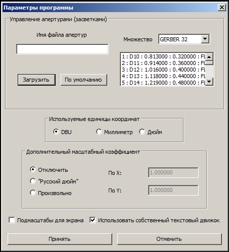

Общий вид диалога настройки программы.

Процедура настройки программы позволяет установить её основные параметры и режимы, которые имеют глобальную сферу значимости и будут применяться прочими модулями и функциями данной программы. На данный момент таких настроек четыре - набор рабочих апертур, единицы измерения размеров, дополнительный масштабный коэффициент и необходимость применения "подмасштаба" при рисовании на экране монитора.
Документы PCAD являются не полностью автономными. Для их корректного открытия и/или отображения необходима некоторая дополнительная информация, которая не содержится непосредственно в самом файле изображения. Эта информация находится в дополнительном файле, называемом файлом описания апертур. Программой поддерживаются два вида таких файлов: файл апертур типа PCAD (этот файл формируется и используется самим комплексом DOS PCAD, конкретно, программой PC-PHOTO), а также файл апертур в формате CAM350, который имеет открытый человекочитаемый формат и обычно используется как внешний источник информации об апертурах при передаче документации на производство.
Файл апертур типа PCAD содержит несколько секций с данными, используемыми при построении выходного изображения для разных типов и моделей фотокоординатографов. Для применения при просмотре можно выбрать одну из двух: предназначенную для устройства модели GERBER32 (она содержит описания 24 апертур) и для фотокоординатографа типа GERBER LASER (там описаны 255 апертур). Файл типа CAM350 состоит из одного, единого, списка засветок, не разделённого на отдельные секции. Как правило, он тоже содержит описание 255 апертур.
Выбирать такой требуемый файл, который предполагается использовать в текущем сеансе работы с программой, следует предварительно, перед открытием какого-либо файла с изображением. Это делается посредством первого обособленного блока, входящего в диалог настройки. Он позволяет выбрать и загрузить конкретный файл апертур с диска, а также указать его нужную для использования секцию (это возможно только для файлов в формате PCAD). В случае, если пользователем файл описания засветок не выбран, будет использоваться набор апертур по умолчанию, который определён внутри программы-просмотрщика. Он совпадает с наиболее распространённой версией набора апертур, чаще всего применяемой с фотокоординатографом GERBER LASER. В этом случае отрисовка некоторых примитивов, требующих сведений об апертурах, может отличаться от их истинного вида и быть приблизительной (условной).
Все размерные параметры всех примитивов хранятся в файлах PCAD в виде целочисленных "единиц базы данных" (DBU). Но программа позволяет вводить и выводить координаты точек (и другие размеры) также и в двух более привычных и стандартных единицах - миллиметрах и дюймах. В этом случае вводимые/выводимые величины могут быть и дробными. Выбор используемых единиц измерения осуществляется с помощью "радиокнопок" второго блока диалога настройки.
Формат файлов PCAD предусматривает два типа систем координат - метрическую и английскую (дюймовую). Информация о системе координат, в которой сформирован рисунок, хранится в его заголовке. Но в некоторых случаях целесообразно применить какую либо другую координатную единицу длины. Информации об этом файл, естественно, не содержит. Но её можно ввести в третьем блоке диалога конфигурации - блоке "Дополнительный масштабный коэффициент". Получившим определённое распространение примером такой единицы является "русский дюйм", равный точно 2.5 см.
Режим коэффициента выбирается радиокнопками. "Отключено" - координатные единицы совпадают с указанными в заголовке файла и корректировка не требуется. "Русский дюйм" - используется единица "русский дюйм", равная 2.5 см (английский дюйм равен, как известно, 2.54 см). "Произвольно" - можно ввести любые коэффициенты, причём отдельно для каждой коодинатной оси: в поле "По X" вводится коэффициент для оси абсцисс,а в поле "По Y" - коэффициент для оси ординат.
Наконец, в "подвале" диалога расположилась пара крыжиков, которые позволяют вам настроить (включить либо выключить) ещё два глобальных параметра программы. Первый среди них называется так: "Подмасштаб для экрана".
Он позволяет включить или отключить применение "подмасштабов" для рисования на экране. Вообще, подмасштабы служат для обеспечения физической точности размеров построенного изображения при создании его "твёрдой копии", например, на принтере. Этот коэффицент рассчитывается автоматически, исходя из информации о фактической величины точки (пикселя) на устройстве создания "твёрдых копий", т. е. его реальное физическое разрешение. Сведения о нём программа получает от операционной системы.
Аналогичную операцию можно проделать и для монитора, делая попытку обеспечить равенство размеров изображения на экране и его действительного физического размера. Но, к сожалению, предоставляемые ОС сведения о фактическом разрешении монитора, как правило, очень далеки от действительности. Поэтому использование подмасштабирования для экрана редко даёт хорошие результаты и часто приводит к ещё большим искажениям картинки, чем без этой операции. Применение такого подмасштабирования как раз и управляется состоянием единственного органа управления - "крыжика" - описываемого блока. Крыжик установлен - подмасштаб для монитора применяется, сброшен - подмасштабирование отключено.
Второй крыжик нижней линии диалога - "Использовать собственный текстовый движок". Для рисования текстовых примитивов графических файлов PCAD на данный момент программа может применять один из двух доступных "текстовых движков" - систем отрисовки текстовых строк. Одна из них основана на встроенных в wxWidgets функциях рисования текста, а вторая реализует вывод текста самостоятельно, опираясь на описание шрифтов в формате CHR, предложенных когда-то фирмой Borland для графической системы BGI. Эти шрифты по заложенным в их основе алгоритмам описания очертания глифов очень похожи на то, что делает сама САПР PCAD для DOS в своих оригинальных графических редакторах.
Неактивный (непомеченный) крыжик задействует "системный" движок рисования текста, применяющий собственные функции wxWidgets и соответствующие системные (входящие в состав операционной системы) шрифты. Активизация (отметка) же этого крыжика включит внутренний автономный движок рисовки текста, который будет применять для работы CHR-шрифты, один из которых, используемый по умолчанию, уже содержится в ресурсах прогрммы.
Первый способ вывода текста не позволяет адекватно отображать текст во всех возможных режимах, преудсмотренных форматом файлов PCAD. Так что в некоторых случаях текстовые примитивы будут рисоваться не совсем точно (условно) и в ряде случаев будут выглядеть существенно отличающимися от того, как они должны выглядеть на самом деле - в собственных редакторах комплекса PCAD. Преимущество же данного способа рисовки - огромное разнообразие шрифтов и очень высокое качество растеризации, при необходимости достигающее полиграфического уровня.
Достоинство второго способа рисовки текста - точное воспроизведение логики всех оригинальных режимов построения текстовых примитивов. Но всё же абсолютного совпадения с оригинальным отображением текста, как правило, не достигается, так как для этого мало одного лишь воспроизведения логики алгоритма, а требуются ещё и подходящие шрифты, которыми автор на данный момент не располагает. Так что и в данном случае некоторые отличия от подлинной картинки будут наблюдаться. Кроме того, упрощенный способ растеризации шрифта приводит к тому, что очертания символов получаются весьма грубыми и угловатыми, что никак не может считаться высококачественным с типографской точки зрения. Так что выбирайте один из имеющихся способов, исходя из собственных приоритетов.